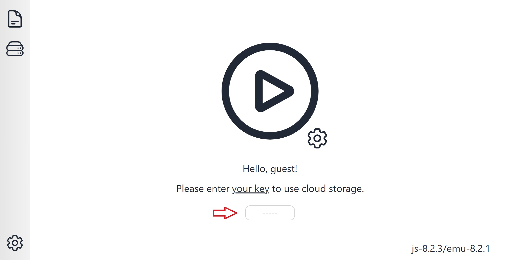

js-dos cloud
js-dos offers cloud services that improve user experience. They include:
Storing saves in the cloud, that means you can restore your progress on any browser.
Networking that allows you to play multiplayer dos games.
Fat16, Fat32 network drives (sockdrive)
To activate cloud services, you need to provide your secret key.
In UI of player (type key in input):
 Using player options
Secret key
You can get secret key here
Last modified: 03 октября 2024